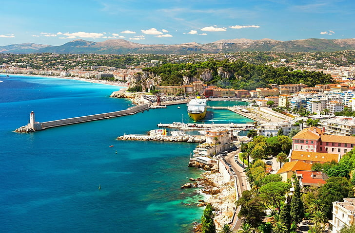
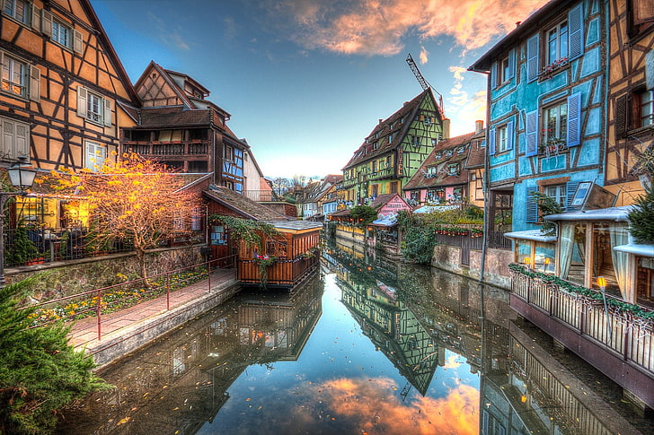
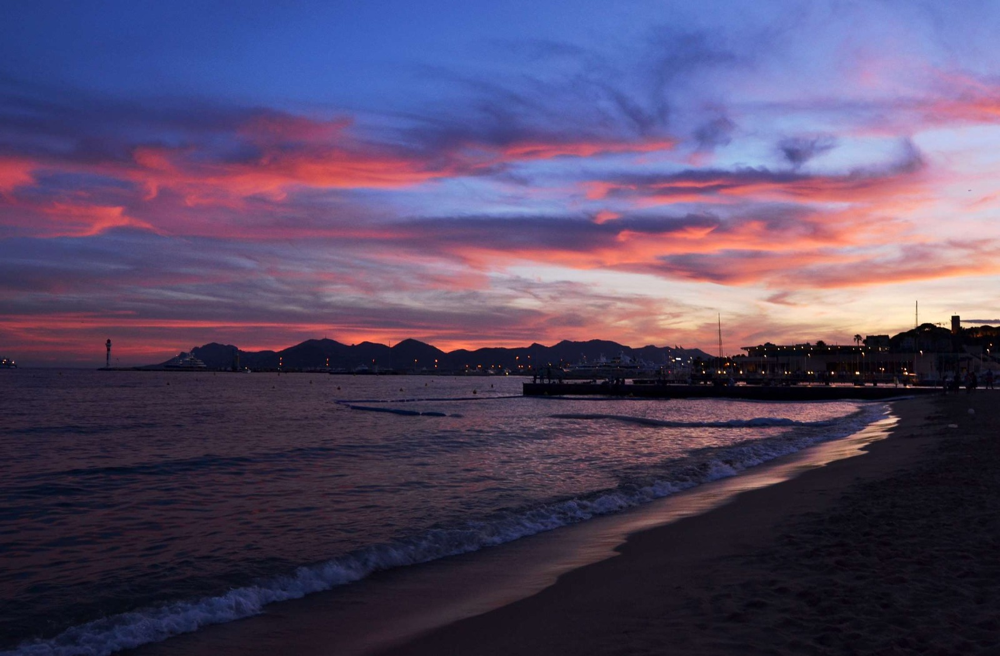

France, located in Western Europe, is a country renowned for its rich history, stunning landscapes, and vibrant culture. It is often referred to as the "City of Love" and offers a diverse range of experiences for travelers of all interests.
With its iconic landmarks like the Eiffel Tower, Louvre Museum, and Notre-Dame Cathedral, France is a hub of art, architecture, and history. The country has played a significant role in shaping world art and culture, and its museums and galleries house some of the world's most famous artworks.
Beyond its urban attractions, France boasts diverse natural landscapes, from the picturesque lavender fields of Provence to the majestic Alps in the east. The French Riviera offers glamorous beaches and luxury resorts, while the charming countryside features vineyards, castles, and historic villages.
French cuisine is celebrated globally for its culinary excellence. Indulge in exquisite pastries, cheeses, wines, and traditional dishes like coq au vin and ratatouille. French dining is not just about the food, but also about the experience of savoring each meal in a cozy bistro or a fine restaurant.
Whether you're strolling along the Seine River in Paris, exploring the enchanting castles of the Loire Valley, skiing in the Alps, or relaxing in a vineyard in Bordeaux, France offers a myriad of experiences that captivate and inspire travelers from around the world.
Popular Destinations
France offers a diverse range of destinations, each with its own unique charm and attractions. Here are some of the must-visit places:
Paris
The capital city of France, Paris, needs no introduction. Home to iconic landmarks like the Eiffel Tower, Louvre Museum, and Champs-Élysées, Paris is a hub of art, fashion, and romance. Enjoy leisurely walks along the Seine River and indulge in world-class dining and shopping.
Provence
Known for its picturesque landscapes, lavender fields, and charming villages, Provence is a haven for nature enthusiasts and those seeking a peaceful retreat. Explore the historic town of Avignon, stroll through fragrant lavender fields, and savor the region's delectable cuisine.
French Riviera
The French Riviera, also known as the Côte d'Azur, offers glamorous beaches, luxurious resorts, and vibrant nightlife. Discover the opulent city of Nice, the glamour of Cannes, and the artistic allure of Saint-Tropez, all while enjoying the Mediterranean sun.

Loire Valley
Famous for its enchanting castles and vineyards, the Loire Valley is a fairy tale destination. Explore magnificent châteaux like Château de Chambord and Château de Chenonceau, and immerse yourself in the history and romance of this region.
Mont Saint-Michel
Rising dramatically from the sea, Mont Saint-Michel is a UNESCO World Heritage site that captures the imagination. Explore the abbey perched atop the rocky island, surrounded by medieval streets and stunning views of the surrounding bay.
Alsace
Located in northeastern France, Alsace is known for its charming villages, half-timbered houses, and rich cultural heritage. Strasbourg, the capital, boasts an impressive cathedral and a blend of French and German influences.

These are just a few examples of the many incredible destinations France has to offer. Whether you're interested in history, art, nature, or cuisine, there's a perfect destination waiting for you in this diverse and enchanting country.
Activities in France
France offers a plethora of activities that cater to various interests and preferences. Whether you're an art enthusiast, an outdoor adventurer, a food lover, or someone seeking relaxation, there's something for everyone to enjoy:
Art and Culture
Immerse yourself in the world of art by visiting the Louvre Museum, Musée d'Orsay, and Centre Pompidou in Paris. Attend live performances at historic theaters like the Opéra Garnier. Explore charming art galleries and exhibitions throughout the country.
Outdoor Adventures
Embark on outdoor adventures in the French Alps, Pyrenees, and Massif Central. Enjoy skiing, snowboarding, and mountaineering in winter, and hiking, biking, and paragliding in the warmer months. The French countryside offers opportunities for horseback riding, kayaking, and hot air balloon rides.
Culinary Experiences
Indulge in culinary delights by taking cooking classes, visiting local markets, and savoring regional specialties. Explore wine regions like Bordeaux, Burgundy, and Champagne, and enjoy wine tastings and vineyard tours. Don't miss the chance to dine at Michelin-starred restaurants.
Historical Exploration
Uncover France's rich history by visiting its historic landmarks and sites. Explore the Palace of Versailles, the medieval town of Carcassonne, and the ancient Roman theaters in Provence. Discover the D-Day landing beaches in Normandy and the historic castles of the Loire Valley.
Relaxation and Wellness
Experience ultimate relaxation in the French countryside or at luxury spa resorts. Enjoy rejuvenating spa treatments, yoga retreats, and meditation sessions. Bask in the tranquility of charming villages and picturesque landscapes.

Whether you're seeking adventure, cultural enrichment, or simply a relaxing escape, France offers a wide range of activities that promise unforgettable experiences and memories.
Resources for Visiting France
Planning a trip to France? Here are some helpful resources and tips to make your journey smooth and memorable:
Travel Guides
Explore comprehensive travel guides that provide insights into France's top attractions, transportation options, local customs, and more. Websites like Lonely Planet and Rick Steves offer valuable information for travelers.
Language
While many French people speak English, learning a few basic French phrases can enhance your experience. Consider using language learning apps like Duolingo or Babbel to brush up on your language skills.
Transportation
France has an extensive and efficient transportation system. Research train schedules and consider purchasing a rail pass for easy travel between cities. Utilize local public transportation options like buses and metros in urban areas.
Accommodation
Choose from a variety of accommodation options, including hotels, guesthouses, Airbnb rentals, and boutique inns. Booking websites like Booking.com and Airbnb provide a range of choices to suit your preferences and budget.
Currency and Payments
The official currency is the Euro (€). Notify your bank about your travel dates to avoid issues with using your credit or debit card abroad. Familiarize yourself with currency exchange rates and keep some cash on hand for smaller expenses.
Local Cuisine
Sample authentic French cuisine at local eateries and markets. Research popular dishes and dining etiquette. Don't forget to try regional specialties and enjoy the café culture that is an integral part of French life.
Safety and Health
France is generally a safe destination, but it's still important to stay aware of your surroundings and take basic safety precautions. Ensure you have travel insurance that covers medical expenses and emergencies.
Remember to check the latest travel advisories and entry requirements before your trip. By planning ahead and utilizing these resources, you can have a memorable and enjoyable visit to France.